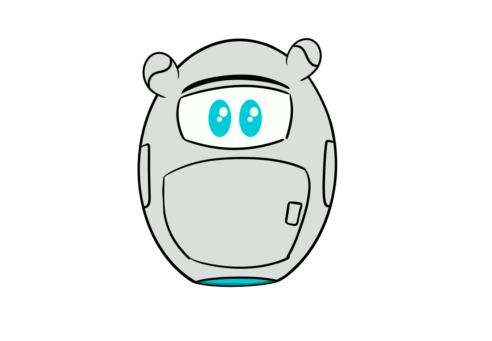
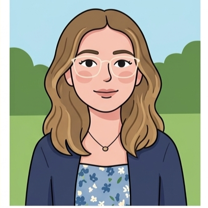
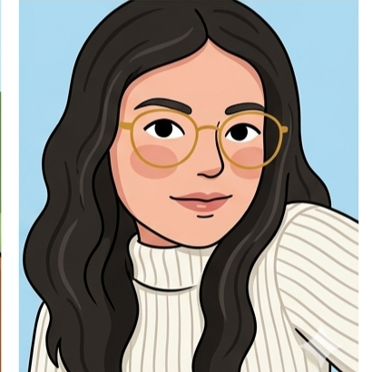
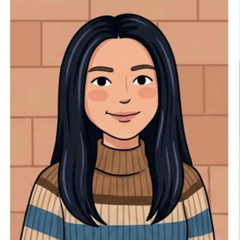
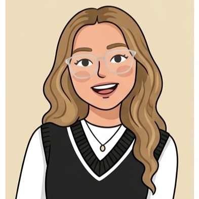

1. Idea
Definición de la idea general del videojuego y del personaje. Comenzando por diversas ideas, hasta definir una idea central acerca de en que se iba a enfocar la historia.
Estudiantes de noveno semestre, de Ingeniería Multimedia. Con interés en la concientización sobre el cuidado del medio ambiente, por medio de herramientas digitales.

Robot Explorador
Para crear al personaje se crearon distintos bocetos, con ideas diferentes de como podría ser el personaje principal, con lo cual se definieron las características que se ven en la imagen.
Este proyecto busca generar conciencia de como la buena manipulación de los residuos puede tener un impacto positivo en el medio ambiente. Y como impactar en distintos públicos, especialmente en niños.
Definición de la idea general del videojuego y del personaje. Comenzando por diversas ideas, hasta definir una idea central acerca de en que se iba a enfocar la historia.
Creación del personaje, de la historia y del escenario. Se ilustraron los elementos necesarios, con una estética semejante a Low Poly en 2D. Adicionalmente, la creación del plano del juego análogo.
Para evaluar la jugabilidad del juego, se creo una versión análoga del videojuego, compuesto por un tablero, cartas y minijuegos que simulan y evalúan como el usuario comprende la información sobre el cuidado ambiental.

Líder

Programadora

Modeladora 3D

Diseñadora UX
Tester